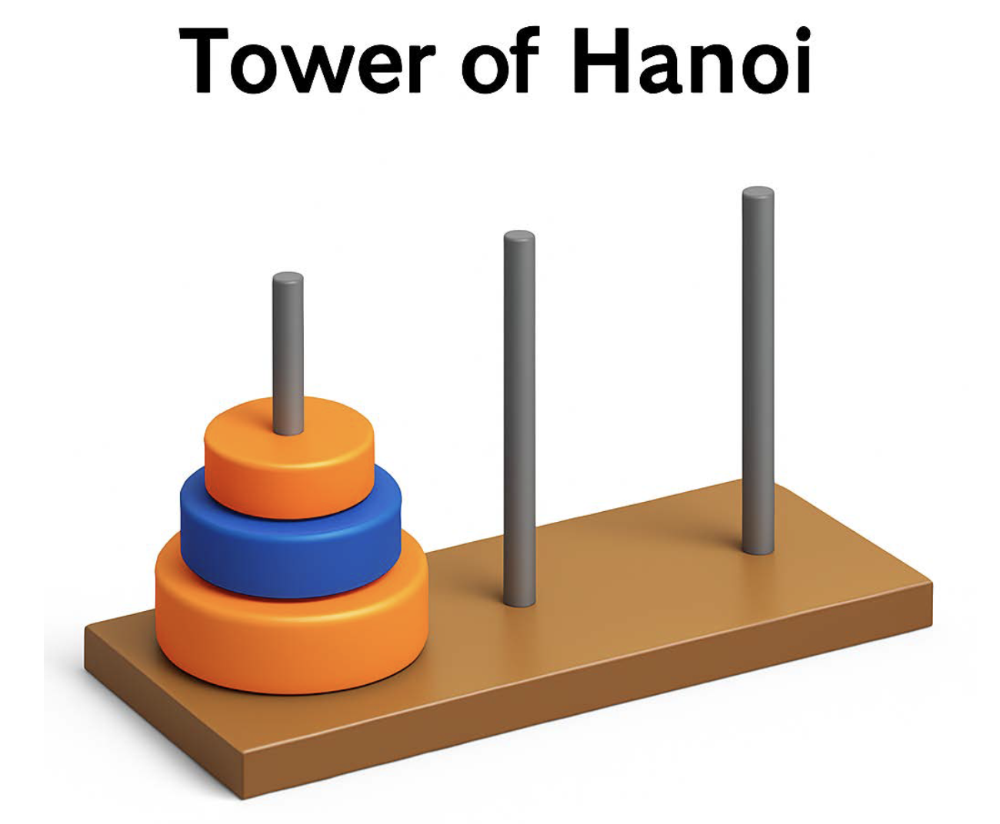

The Tower of Hanoi is a classic puzzle involving three pegs and a set of disks of different sizes. Initially, all the disks are stacked in ascending order (largest at the bottom) on peg 1.
Your task is to move the entire stack to peg 3, following these rules:
The challenge is to solve this problem optimally, using the minimum number of moves.
Given the number of disks on peg 1, print the optimal sequence of moves required to transfer all disks to peg 3.
A single line containing an integer n (1 <= n <=
15), corresponding to the number of disks on the peg 1.
Print the list of optimal moves, each move in one line
Each line should be of the form x -> y, where x
is the source peg number and y is the destination peg number.
3
1 -> 3 1 -> 2 3 -> 2 1 -> 3 2 -> 1 2 -> 3 1 -> 3
1 2 3 --- 1 -> 3 2 3 1 --- 1 -> 2 321 --- 3 -> 2 1 32 --- 1 -> 3 1 23 --- 2 -> 1 123 --- 2 -> 3 2 1 3 --- 1 -> 3 1 2 3 ---
1
1 -> 3
2
1 -> 2 1 -> 3 2 -> 3
Content by Fernando Silva and Vanessa Silva (DCC/FCUP), copied from the original website.